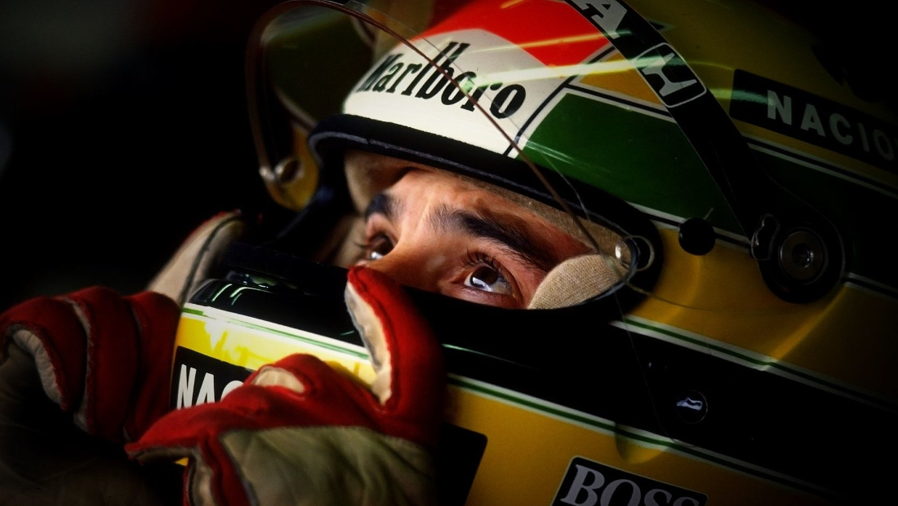
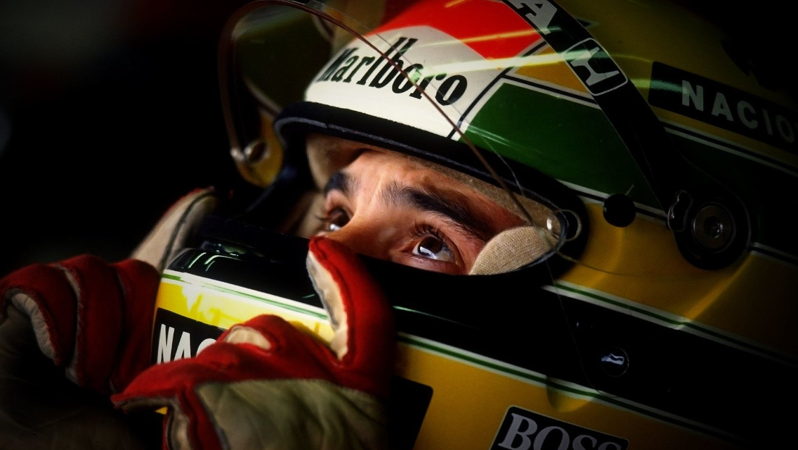

Ayrton Senna da Silva (São Paulo, 21 de marzo de 1960 - Imola, 1 de mayo de 1994) fue un piloto de automovilismo de velocidad brasileño. Siendo tres veces campeón del mundo de Fórmula 1 y dos veces subcampeón, figura entre los más exitosos y dominantes pilotos de la era moderna y para muchos expertos, es el más rápido de la historia.
El piloto compitió en Fórmula 1 para los equipos Toleman, Lotus, McLaren y Williams, entre 1984 y 1994 ganando el campeonato mundial en 1988, 1990 y 1991, siendo subcampeón en 1989 y 1993, tercero en 1987 y cuarto en 1985, 1986 y 1992 acumulando en total 41 victorias (seis de ellas en el Gran Premio de Mónaco, récord para el evento), 80 podios y 65 pole positions en tan solo 162 clasificaciones, con una efectividad de más del 40%.
 

Ayrton Senna falleció debido a un fuerte choque sufrido en la curva de Tamburello, durante la carrera en el Autódromo Enzo e Dino Ferrari durante el Gran Premio de San Marino de 1994. Una varilla de la suspensión del vehículo atravesó la visera de su casco provocándole una fatal herida en la cabeza. Tras su muerte, el gobierno de Brasil decretó tres días de luto y un entierro con honores de Estado; más de un millón de personas participaron en su traslado al cementerio. La primera curva del Autódromo José Carlos Pace de su ciudad natal fue bautizada como S de Senna, dado que él propuso el diseño de dicha sección del trazado. Debido a su afamada vida pública tiene numerosos monumentos, club de fanes y recuerdos por todo el mundo.
Desde la muerte de los pilotos Ayrton Senna y Roland Ratzenberger se incrementó de manera drástica la seguridad de la Fórmula 1 asignándole dicho puesto al experimentado médico de pista Sid Watkins el cual intentó reanimar al piloto el día de su accidente. Tras la muerte de Ayrton, pasaron más de 20 años sin accidentes trágicos en la Fórmula 1, hasta que en octubre de 2014 Jules Bianchi sufrió un accidente en el circuito de Suzuka que le costaría la vida unos meses después